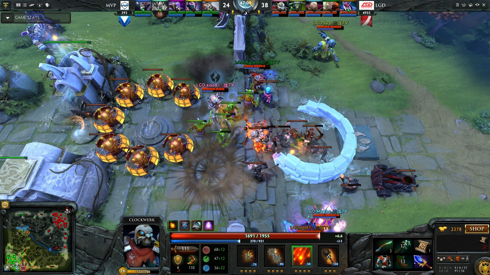
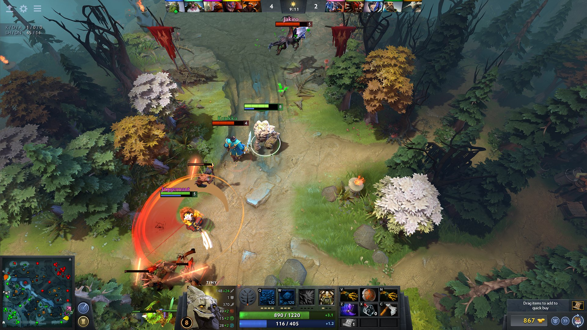

Dota 2 là một trò chơi đấu trường trận chiến trực tuyến nhiều người chơi được Valve Corporation phát triển, dựa theo một mod game nổi tiếng, Defense of the Ancients, từ trò chơi Warcraft III: Reign of Chaos và bản mở rộng của nó The Frozen Throne. Được công bố lần đầu vào ngày 23 tháng 10 năm 2010 qua Game Informer, trò chơi sau đó được đưa vào thử nghiệm với một bản beta miễn phí thông qua hệ thống giftcode. Valve phát hành Dota 2 qua hệ thống điều phối Steam của họ mà qua đó trò chơi được cập nhật song song với hệ thống phiên bản DotA.
Thông thường, mỗi ván Dota 2 là một trận đấu riêng biệt và chia làm 2 đội, mỗi đội gồm 5 người chơi và chiếm đóng một thành lũy ở 2 góc đối diện của bản đồ. Nằm giữa pháo đài mỗi bên là một công trình gọi là "Ancient" ("Thánh Tích"); để giành chiến thắng, một đội phải phá hủy Thánh Tích của đội đối phương. Mỗi người chơi chỉ được điều khiển một nhân vật duy nhất sở hữu một số khả năng chiến đấu nhất định, phối hợp cùng đồng đội giành lợi thế trên bản đồ để đi tới chiến thắng.
Công việc phát triển Dota 2 được bắt đầu vào năm 2009, với việc Valve tuyển được nhà phát triển "IceFrog" của bản mod DotA làm nhà thiết kế chính của tựa trò chơi tiếp nối này. Dota 2 được khen ngợi bởi các nhà phê bình trò chơi điện tử do vừa giữ được nét đặc sắc của trò tiền nhiệm là DotA, vừa nâng cao được chất lượng trò chơi, cũng như những cảm nhận lôi cuốn, hứng thú mà trò chơi mang lại. Tuy nhiên Dota 2 cũng bị phê phán bởi việc nó có "đường cong học hỏi" dốc và cộng đồng người chơi thiếu thân thiện. Kể từ khi ra mắt, Dota 2 luôn là trò được chơi nhiều nhất trên Steam, với lượng người chơi cùng lúc ở đỉnh điểm là 1.291.328.
Sau đó đến ngày 9 tháng 7 năm 2013, Dota 2 được chính thức kết thúc giai đoạn Beta và được phát hành dưới dạng Free to play trên Windows và sau đó là ngày 18 tháng 7 năm 2013 trên Linux và Mac OS X.